Demo and discussion of the pump_sample method
Source:vignettes/pump_sample_demo.Rmd
pump_sample_demo.RmdIntroduction
The main PUMP vignette covers all of the main functions of the
package. This vignette focuses on one specific function:
pump_sample(), which calculates required sample sizes at
various levels of an RCT design. This function requires extra
explanation because of both its unique interpretation and behavior.
First, this vignette discusses how the user should interpret the output
of a call to pump_sample(). Second, this vignette discusses
some challenges the user might face when using the function.
Intepreting sample size calculations
Let’s start with a case of calculating the sample size for a 3-level model. To demonstrate some of the challenges of calculating sample size, we start with calculating power for a given set of parameters, and then try to recover those parameters.
p <- pump_power(
d_m = "d3.1_m3rr2rr",
MTP = "HO",
nbar = 50,
K = 15,
J = 20,
M = 3,
MDES = rep(0.125, 3),
Tbar = 0.5, alpha = 0.05,
numCovar.1 = 1, numCovar.2 = 1,
R2.1 = 0.1, R2.2 = 0.1,
ICC.2 = 0.2, ICC.3 = 0.2,
omega.2 = 0.2, omega.3 = 0.2,
rho = 0.5, tnum = 100000
)| MTP | D1indiv | D2indiv | D3indiv | indiv.mean | min1 | min2 | complete | SE1 | SE2 | SE3 | df1 |
|---|---|---|---|---|---|---|---|---|---|---|---|
| None | 0.56213 | 0.56524 | 0.56428 | 0.5638833 | NA | NA | NA | 0.0542586 | 0.0542586 | 0.0542586 | 14 |
| HO | 0.41618 | 0.41911 | 0.41886 | 0.4180500 | 0.58365 | 0.39567 | 0.31228 | NA | NA | NA | NA |
Our individual power using the Holm procedure is estimated as 0.418. First, let’s try to recover the original parameter , the number of districts, given the power we just found.
K <- pump_sample(
d_m = "d3.1_m3rr2rr",
typesample = "K",
MTP = "HO",
target.power = target_power,
power.definition = "D1indiv",
J = 20,
nbar = 50,
M = 3,
MDES = 0.125,
Tbar = 0.5, alpha = 0.05,
numCovar.1 = 1, numCovar.2 = 1,
R2.1 = 0.1, R2.2 = 0.1,
ICC.2 = 0.2, ICC.3 = 0.2,
omega.2 = 0.2, omega.3 = 0.2, rho = 0.5
)| MTP | Sample.type | Sample.size | D1indiv.power |
|---|---|---|---|
| HO | K | 16 | 0.4165 |
We recover a similar value K = , but not the exact value of the
original parameter. A small discrepancy from the original parameter is
unsurprising given two features of the package. First, PUMP power
calculations rely on simulations, so the returned values are estimates
with some uncertainty. The randomness inherent to simulations means that
repeating the same power calculation with the same set of parameters
might result in slightly different power estimates. In this example, we
have two sources of uncertainty: uncertainty in what the actual power is
(from our first call), and uncertainty in the power calculations of
pump_sample().
Second, the search algorithm finds a sample size which is within a certain tolerance of the target power, give or take this estimation uncertainty. The default tolerance is , meaning the algorithm will return a value of that has an estimated power within 1% of our target power.
These two facts highlight how the output should be interpreted:
pump_sample finds one possible sample size that would
result in a power within the given tolerance of our target power, give
or take the estimation error. For computational efficiency,
pump_sample also usually is run with fewer simulation
iterations, meaning its estimates are bit more noisy. We therefore
advise checking pump_sample’s work: given an initial sample
size value, it is worth plugging it back into pump_power
with a high degree of precision (by increasing tnum, the
number of test statistics draws) to verify the intended power. One easy
way to verify the power is to use the update() function. We
feed in the sample size object and specify that we now want to run a
power calculation, and can also provide any other parameters that we
would like to update. Here, we override the default
for pump_power() to increase precision.
p <- update(K, type = "power", tnum = 100000)| MTP | D1indiv | D2indiv | D3indiv | indiv.mean | min1 | min2 | complete | SE1 | SE2 | SE3 | df1 |
|---|---|---|---|---|---|---|---|---|---|---|---|
| None | 0.59761 | 0.59543 | 0.59621 | 0.5964167 | NA | NA | NA | 0.0525357 | 0.0525357 | 0.0525357 | 15 |
| HO | 0.45930 | 0.45677 | 0.45735 | 0.4578067 | 0.62488 | 0.43872 | 0.34743 | NA | NA | NA | NA |
We also could find that other values of , including smaller values, would result in a very similar power, so the user should explore different possible values near the output to get a better sense of the variation in power. This idea will be explored in the next section.
Exploring a range of sample size values
Now let’s turn to determining the necessary number of schools , given a fixed .
J1 <- pump_sample(
d_m = "d3.1_m3rr2rr",
typesample = "J",
MTP = "HO",
target.power = target_power,
power.definition = "D1indiv",
K = 15,
nbar = 50,
M = 3,
MDES = 0.125,
Tbar = 0.5, alpha = 0.05,
numCovar.1 = 1, numCovar.2 = 1,
R2.1 = 0.1, R2.2 = 0.1,
ICC.2 = 0.2, ICC.3 = 0.2,
omega.2 = 0.2, omega.3 = 0.2,
rho = 0.5
)| MTP | Sample.type | Sample.size | D1indiv.power |
|---|---|---|---|
| HO | J | 28 | 0.41175 |
Our calculated
is only slightly off from our original input 20. Let’s
explore more information about this sample size calculation. First, we
can print out information about the search path the algorithm took to
arrive at the final answer.
search_path(J1)
#> step MTP target.power pt dx w power delta
#> 1 0 HO 0.418 4.00000 NA 100 0.3200000 -0.09800000
#> 2 0 HO 0.418 88.46708 NA 100 0.4600000 0.04200000
#> 3 0 HO 0.418 282.62278 NA 100 0.4700000 0.05200000
#> 4 0 HO 0.418 586.46708 NA 100 0.4300000 0.01200000
#> 5 0 HO 0.418 1000.00000 NA 100 0.4700000 0.05200000
#> 6 1 HO 0.418 12.89153 0.006228501 110 0.3545455 -0.06345455
#> 7 2 HO 0.418 78.72271 0.014661378 121 0.4380165 0.02001653
#> 8 3 HO 0.418 44.77373 0.001355573 133 0.4436090 0.02560902
#> 9 4 HO 0.418 32.17284 0.001934751 146 0.4315068 0.01350685
#> 10 5 HO 0.418 27.80871 0.003069826 1000 0.4250000 0.00700000
#> 11 5 HO 0.418 27.80871 0.003069826 4000 0.4117500 -0.00625000At step 0, the algorithm tries a range of possible sample size values, bounded by calculated minimum and maximum values for the scenario, and calculates power for each. After step 0, the algorithm fits a model to the data points, and then uses the model to attempt to arrive closer and closer to a sample size achieving the target power.
Note the dx column of the printout, above: this is the
derivative of the estimated power curve. We see it is not particularly
large, meaning an increase of
by 4 would result in an estimated change in power of a bit less than
0.01, which is below our set tolerance level.
We can also plot the path the algorithm took to estimate :
plot(J1, type = "search")
The first plot on the left shows how power varies over different sample sizes. The axis, , shows different values of the sample size, and the axis shows the corresponding values of power. Each point on the graph represents a step in the search algorithm. The number for each point corresponds to the step number. In this case, the algorithm took only 2 steps after the initial set of points tested at step 0. The size of the point corresponds to the weight of the step; steps with more precision (higher tnum) are weighted more highly, which generally occur in later steps of the algorithm. The purple line shows the target power we are trying to achieve.
The remaining plots show information about the steps taken by the search algorithm to arrive at the final results. The middle plot shows the calculated power at each step of the algorithm. The final plot shows the value(s) of the sample size tried at each step.
We can also examine the power for a grid of points up to our selected . This information is a second estimation step to verify our results, and can help us examine whether smaller values of might result in similar values of power.
power_curve(J1)
#> step pt w MTP target.power power
#> 1 0 6.0000 2000 HO 0.418 0.3375
#> 2 0 110.1948 2000 HO 0.418 0.4570
#> 3 0 343.9264 2000 HO 0.418 0.4435
#> 4 0 707.1948 2000 HO 0.418 0.4615
#> 5 0 1200.0000 2000 HO 0.418 0.4745From this output, we can see that the power curve is very flat. This outcome means that a variety of sample size values result in relatively similar estimates of power.
Finally, we can also visualize this power curve.
plot(J1)
Flat power curves
For some designs, the power curve can be extremely flat in certain
regions. This flatness can mean that a wide range of potential sample
size values can result in virtually the same power. Flat curves
typically happen below the top level of a hierarchical model. For
example, for a three-level model, we expect very little flatness in
K, some flatness in J, and the highest
likelihood for flatness in nbar. This pattern occurs
because below the top level, we can reach an asymptote, where no matter
how much we increase the sample size, the power is limited by our number
of top-level units. Intuitively, for some models, if we see a certain
level of variation at the district level, then it doesn’t matter how
many schools we have for each district–we will not be able to explain
the district-level variation unless we increase the number of districts.
Let’s examine a case where we see a flat power curve. First, we
calculate power for a sample size of nbar =
.
pp1 <- pump_power(
d_m = "d3.3_m3rc2rc",
MTP = "HO",
nbar = 50,
K = 20,
J = 40,
M = 3,
MDES = rep(0.25, 3),
Tbar = 0.5, alpha = 0.05,
numCovar.1 = 1, numCovar.2 = 1, numCovar.3 = 1,
R2.1 = 0.1, R2.2 = 0.1, R2.3 = 0.1,
ICC.2 = 0.1, ICC.3 = 0.1,
omega.2 = 0, omega.3 = 0, rho = 0.5
)| MTP | D1indiv | D2indiv | D3indiv | indiv.mean | min1 | min2 | complete | SE1 | SE2 | SE3 | df1 |
|---|---|---|---|---|---|---|---|---|---|---|---|
| None | 0.3981 | 0.4015 | 0.3991 | 0.3995667 | NA | NA | NA | 0.1360956 | 0.1360956 | 0.1360956 | 17 |
| HO | 0.2594 | 0.2639 | 0.2609 | 0.2614000 | 0.4085 | 0.2336 | 0.1676 | NA | NA | NA | NA |
Now, we attempt to recover the nbar value given this
power.
nbar1 <- pump_sample(
d_m = "d3.3_m3rc2rc",
power.definition = "D1indiv",
target.power = 0.2594,
typesample = "nbar",
MTP = "HO",
K = 20,
J = 40,
M = 3,
MDES = rep(0.25, 3),
Tbar = 0.5, alpha = 0.05,
numCovar.1 = 1, numCovar.2 = 1, numCovar.3 = 1,
R2.1 = 0.1, R2.2 = 0.1, R2.3 = 0.1,
ICC.2 = 0.1, ICC.3 = 0.1,
omega.2 = 0, omega.3 = 0, rho = 0.5
)
#> Warning: Using default max sample size for one end of initial bounds of search,
#> so estimation may take more time.| MTP | Sample.type | Sample.size | D1indiv.power |
|---|---|---|---|
| HO | nbar | 22327 | 0.252 |
The output returns an unexpectedly large sample size! We also see a warning message that the derivative is flat.
Given the warning message about the flatness, we examine the power curve plot.
plot( nbar1 )
Remember that our original nbar value was 50. We can see from this search that the power curve is very flat in some regions. With a three level model with substantial variation at level 2 and level 3, even perfect estimation of the individual sites will not give us perfect estimation of the superpopulation. Thus, above an nbar value of 10, the curve asymptotes–we will never be able to achieve power above a certain threshold by increasing nbar. On the other hand, if we want power in the range of the asymptote, a wide variety of sample sizes would result in the same power. This explains our result–a sample size of 22,500 will indeed give us the intended power, but a much smaller sample size would also give us sufficient power.
There are two ways to proceed from here. First, we can look at the
curve, and proceed straight to plugging sample sizes into the power
function to see if the desired power is achieved. Let’s check a value of
for nbar.
pp2 <- pump_power(
d_m = "d3.3_m3rc2rc",
MTP = "HO",
nbar = 10,
K = 20,
J = 40,
M = 3,
MDES = rep(0.25, 3),
Tbar = 0.5, alpha = 0.05,
numCovar.1 = 1, numCovar.2 = 1, numCovar.3 = 1,
R2.1 = 0.1, R2.2 = 0.1, R2.3 = 0.1,
ICC.2 = 0.1, ICC.3 = 0.1,
omega.2 = 0, omega.3 = 0, rho = 0.5
)| MTP | D1indiv | D2indiv | D3indiv | indiv.mean | min1 | min2 | complete | SE1 | SE2 | SE3 | df1 |
|---|---|---|---|---|---|---|---|---|---|---|---|
| None | 0.3922 | 0.3964 | 0.3943 | 0.3943000 | NA | NA | NA | 0.1371496 | 0.1371496 | 0.1371496 | 17 |
| HO | 0.2545 | 0.2590 | 0.2549 | 0.2561333 | 0.4006 | 0.2292 | 0.1646 | NA | NA | NA | NA |
Even with a substantially smaller value of nbar, we have
achieved a level of power that is relatively close to our initial
target.
Alternatively, we can constrain the algorithm to focus our efforts in
the flat region, for example by changing the argument
max_sample_size_nbar, which bounds the upper end of our
search region. Let’s try setting the maximum to 100, which is still
somewhat conservative based on the curve.
nbar2 <- pump_sample(
d_m = "d3.3_m3rc2rc",
typesample = "nbar",
MTP = "HO",
target.power = pp1$D1indiv[2],
power.definition = "D1indiv",
K = 20,
J = 40,
M = 3,
MDES = rep(0.25, 3),
Tbar = 0.5, alpha = 0.05,
numCovar.1 = 1, numCovar.2 = 1, numCovar.3 = 1,
R2.1 = 0.1, R2.2 = 0.1, R2.3 = 0.1,
ICC.2 = 0.1, ICC.3 = 0.1,
omega.2 = 0, omega.3 = 0, rho = 0.5,
max_sample_size_nbar = 100
)| MTP | Sample.type | Sample.size | D1indiv.power |
|---|---|---|---|
| HO | nbar | 45 | 0.2595 |
We get a sample size estimate that is much more reasonable than our original estimate, but it is still larger than we need to achieve the target power.
Sometimes, it also helps to run the sample size algorithm again with
a finer-tuned power estimation by increasing the number of test
statistics drawn during each iteration of the algorithm. The parameter
start.tnum sets the number of iterations we start with, and
final.tnum controls the number of test statistics drawn
during later iterations as the algorithm refines its estimate. We can
also sometimes get closer to the original sample size of by decreasing
our default tolerance from tol = 0.01. By decreasing the
tolerance, we impose a stricter criteria; the final sample size returned
must be closer to our target power.
Non-Convergence
Let’s return to a scenario very similar to the previous section, but now we want a higher target power. In particular, we want a target power of , which we know is higher than the point at which the power asymptotes.
nbar3 <- pump_sample(
d_m = "d3.3_m3rc2rc",
power.definition = "D1indiv",
target.power = 0.4,
typesample = "nbar",
MTP = "HO",
K = 20,
J = 40,
M = 3,
MDES = rep(0.25, 3),
Tbar = 0.5, alpha = 0.05,
numCovar.1 = 1, numCovar.2 = 1, numCovar.3 = 1,
R2.1 = 0.1, R2.2 = 0.1, R2.3 = 0.1,
ICC.2 = 0.1, ICC.3 = 0.1,
omega.2 = 0, omega.3 = 0, rho = 0.5
)| MTP | Sample.type | Sample.size | D1indiv.power |
|---|---|---|---|
| HO | nbar | 23632079 | 0.2640118 |
We see that the algorithm returns NA as the required
sample size. Let’s examine the power search for more information.
plot(nbar3, type = "search")
The first plot shows us the sample size against power. We can see
that no matter how large nbar is, we can never achieve a
power above about
.
The algorithm keeps trying larger and larger points until it reaches the
maximum number of steps, and returns NA. If we want to
achieve a power of
with this design, we will need to change other parameters, such as
or
.
Note: Non-convergence for feasible designs
In rare cases, the algorithm may not converge even if the design is feasible. Thus, the user should always inspect the search path in cases of nonconvergence to examine if there is possibly a feasible value of the sample size. If the power does not asymptote below the target power, then a sample size corresponding to the target power is possible even if the search algorithm was unable to arrive at that value.
In a case of non-convergence for a feasible set of parameters, the following strategies can be tried:
- Re-run the function. Due to randomness, sometimes repeating the same call will result in convergence.
- Increase the max_steps parameter, which controls how many steps the optimization procedure tries.
- Decrease tolerance. The final result may not be as precise, but at least will return a plausible range of values to explore.
- Decrease max_sample_size. There are two arguments,
max_sample_size_nbarfornbarsearches, andmax_sample_size_JKfor searches overJorK. Decreasing the upper bound focuses the algorithm in a more likely area of the sample size space. - Increase precision through start.tnum and max.tnum. Increasing precision provides a better estimate of the true power curve.